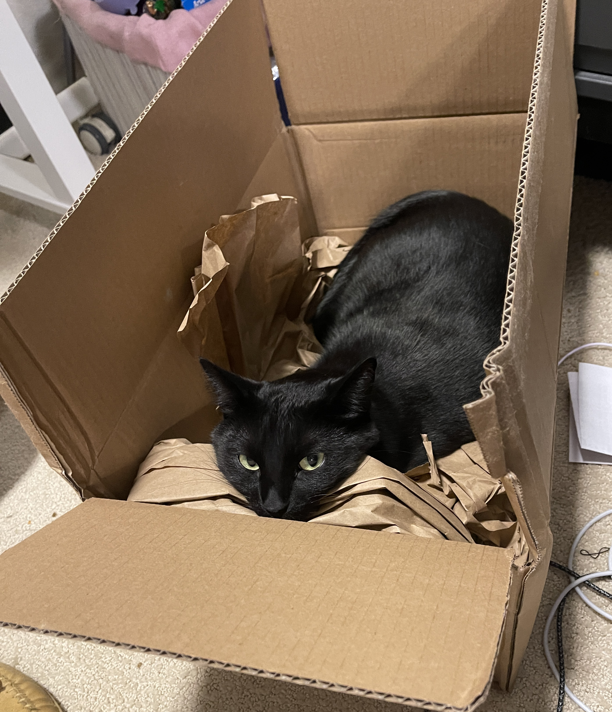
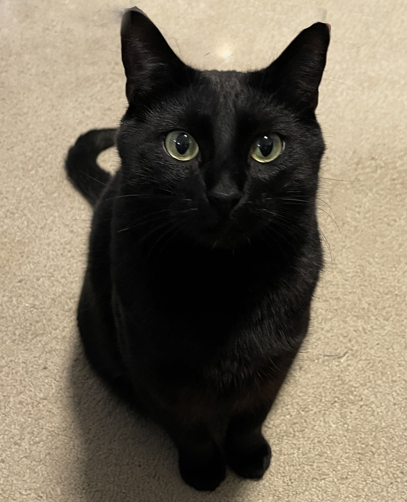
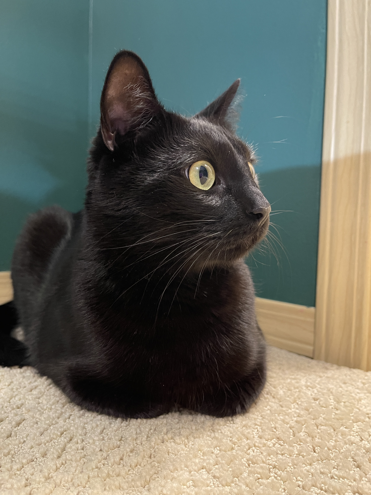
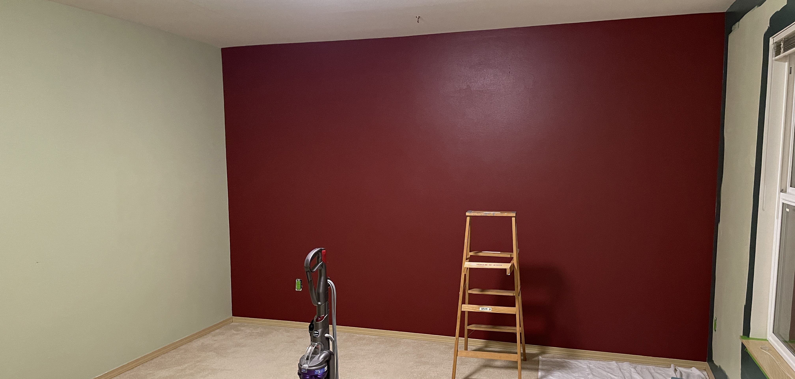

Thinking of giving your room a fresh coat of paint? Why not add a touch of feline flair to the mix? Follow these steps to celebrate the unpredictable charm of having a cat as your painting buddy. Embrace the delightful chaos as we guide you through the colorful journey of room painting with your furry assistant. Let’s turn your bedroom into a cat-tastic masterpiece, one fuzzy paw at a time!
Step 1: Unboxing Your Cat
Before any painting project can begin, it's crucial to properly unbox your feline assistant. As we all know, a cat’s natural habitat is any box that appears, so gently remove your kitty from their cardboard kingdom. This step ensures they’re ready to "supervise" every brushstroke and offer a helpful paw.
Step 2: Preparing Your Cat for the Task Ahead
After unboxing, it's time for your cat to get into the zone. Notice their intense, focused stare. This is the look of a true professional. Whether they're planning the perfect paint swatch or just contemplating their next nap, this preparation phase is essential. Make sure to give them a moment to gather their thoughts (and strike a pose) before diving into the project.
Step 3: Supplying Your Cat with the Right Tools

Every expert assistant needs the right tools, and your cat is no exception! Equip your furry helper with a foam roller. While they lounge beside it, you'll know they're ready to "assist" with precision and flair. Remember, a well-prepared cat is the key to a purr-fectly painted room!
Step 4: Supervising from Below

No painting project is complete without your cat taking up a strategic position. Under the ladder is the perfect spot for overseeing all the action from a safe vantage point. Their keen eyes will ensure that no detail goes unnoticed and that you’re following all the steps correctly. Plus, it’s the ideal place for a quick catnap between rounds of supervision!
Step 5: The Final Inspection
With the painting complete, it’s time for the final inspection. Your cat, positioned thoughtfully, will survey the freshly painted walls. Their approving gaze (or indifferent glance) signifies a job well done. Take a moment to admire your work—and your feline assistant’s invaluable contributions to this masterpiece!
The Results
Before feline assistant

After feline assistant